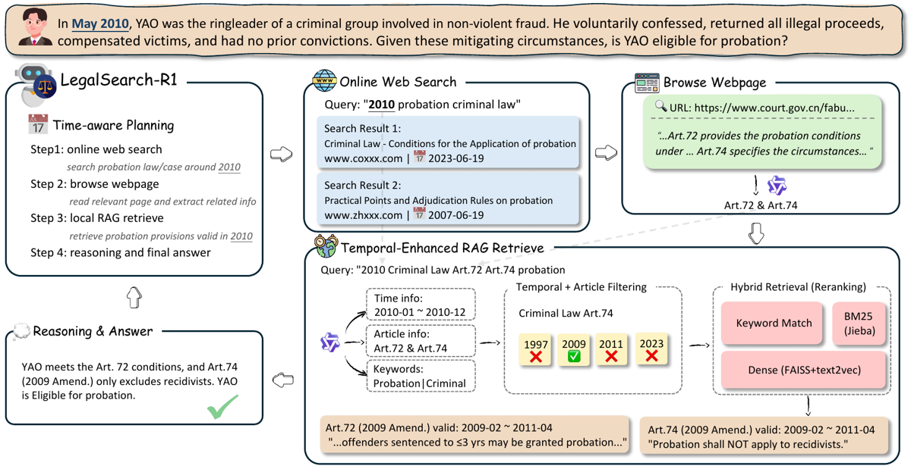
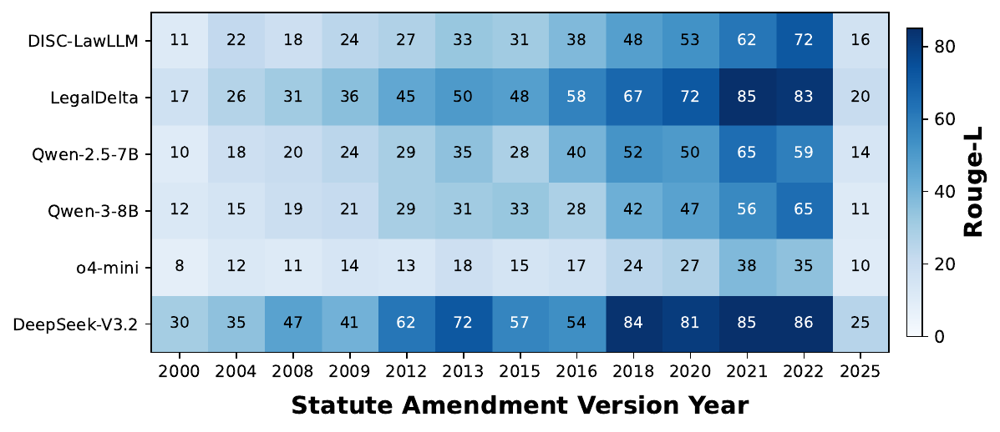
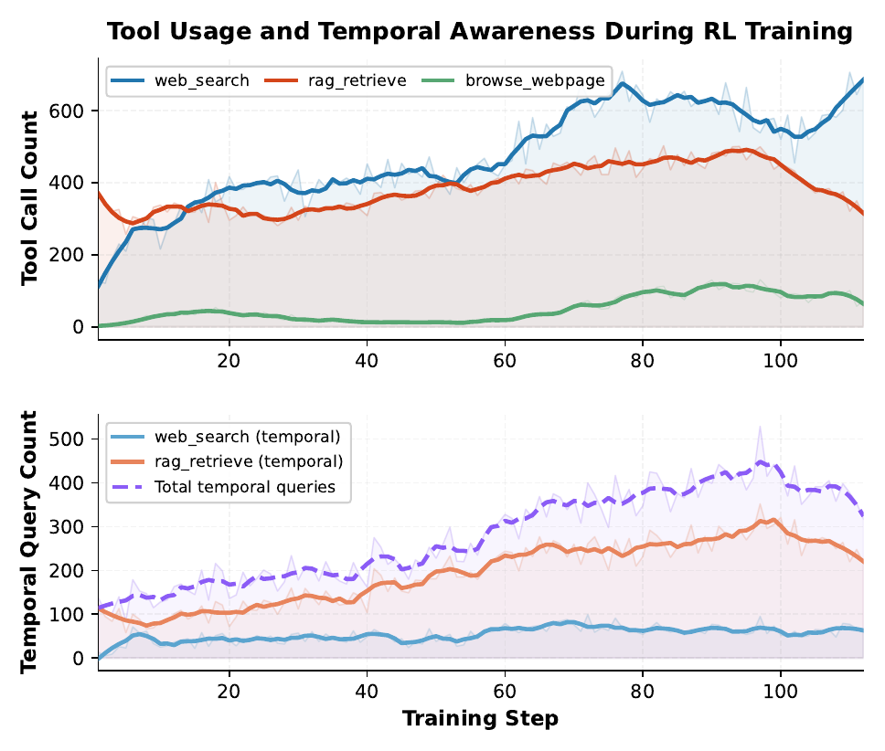

TL;DR. Agent de recherche juridique 7B entraîné par GRPO (+ advantage shaping entropique) sur 3 584 questions de droit chinois indexées temporellement, avec trois outils dont un RAG statutaire filtré par fenêtre de validité (t_from, t_to) ; la cohérence temporelle n'est jamais récompensée explicitement — elle est censée émerger de la donnée et du filtre de l'outil.
Claim principal. « Notre agent 7B dépasse les deep research frameworks SOTA et les LLM juridiques spécialisés de 12,9 % à 29,8 %, dépasse toutes les baselines de 57,7 % à 80,3 % sur la cohérence temporelle, et généralise hors domaine » [Abstract]. Sur 7 tâches in-domain : 55,90 de moyenne vs 39,19 (DeepPlanner, meilleure baseline deep research) et 50,56 (DeepSeek-V3.2) [Tab. 2]. Sur 6 tâches OOD : 63,67 vs 53,91 [Tab. 5, App. C].
⚠️ Deux reformulations nécessaires dès la première ligne (détail en 7.0 et 3) : 1. Le « 57,7 % à 80,3 % de cohérence temporelle » est un comptage de requêtes contenant une date, pas une mesure de correction temporelle des réponses. 2. Le gain moyen in-domain est porté quasi exclusivement par LAR, la tâche que les auteurs ont eux-mêmes créée et dont la vérité terrain est le texte verbatim du corpus que seul leur agent peut interroger. Hors LAR, l'écart avec les meilleures baselines tombe à ~1 point (calcul en 7).
Origine. Hybride : minage de benchmarks publics + une tâche annotée par des humains. - Sélection à partir de « plus de 100 000 questions candidates » issues de LawBench, LexEval, DISC-LawEval, « et nos propres annotations » [§4]. - 5 tâches de LawBench : KQA (QCM connaissance), CCP (prédiction de chef d'accusation), PTP (durée de peine), LCA (analyse de cas, QCM), LCS (consultation juridique, jugée par LLM) [§4.1]. - 1 tâche de LexEval : LAP (prédiction d'article applicable, QCM) [§4.1]. - 1 tâche nouvelle : LAR — Legal Article Recitation : réciter le texte exact d'un article donné sous un contexte temporel donné, scoré par ROUGE-L [§4.1].
Pipeline LAR (la seule partie annotée à la main). Recrutement d'étudiants en droit d'écoles de droit chinoises → identification des provisions ayant subi des révisions significatives dans le Code pénal, le Code de procédure pénale et le Code de procédure civile → annotation pré-révision / post-révision [§4.1, App. F]. Critères de sélection (au moins un) [Fig. annotation guidelines, App. F] : 1. le texte révisé diffère de l'original de plus de 20 % en nombre de caractères ; 2. la révision introduit un changement sémantique clair (ajout/retrait de conditions, changement des fourchettes de peine, inversion de présomptions). Format annoté : numéro d'article (pré et post, si renuméroté), date d'entrée en vigueur, texte intégral. Couverture : 13 versions d'amendement de 2000 à 2025 [§4.1, App. F].
Volume et distribution [Tab. 1] :
| Tâche | Source | Train #All | Train #Temp | Test #All | Test #Temp |
|---|---|---|---|---|---|
| KQA | LawBench | 512 | 11 | 128 | 5 |
| CCP | LawBench | 512 | 501 | 128 | 125 |
| PTP | LawBench | 512 | 501 | 128 | 125 |
| LCA | LawBench | 512 | 71 | 128 | 16 |
| LCS | LawBench | 512 | 15 | 128 | 5 |
| LAP | LexEval | 512 | 493 | 128 | 123 |
| LAR | Ours | 512 | 512 | 128 | 128 |
| OOD (6 tâches) | DISC-Law | — | — | 768 | 571 |
| Total | 3 584 | 2 104 | 1 664 | 1 098 |
#Temp = questions avec contexte temporel explicite (mention d'une année). Table vérifiée cohérente (2 104 = somme, 527 in-domain test + 571 OOD = 1 098 ✅, et 527/571 réapparaissent en légende de [Fig. 3]).
⚠️ Point majeur non traité par le papier : la charge temporelle est très inégale. KQA (11/512), LCS (15/512), LCA (71/512) sont quasi sans contexte temporel. 41 % du test in-domain (369/896) n'a aucune date explicite — et le comportement du filtre temporel dans ce cas (time_info: []) n'est analysé nulle part.
Distribution de difficulté : non précisé (aucune stratification par difficulté, aucun pass@k rapporté).
Filtrage : pas de filtrage par pass@k du modèle de base, pas de filtrage par un autre modèle. Seuls critères mentionnés : exclusion des tâches purement arithmétiques, et « échantillonnage équilibré entre contextes temporels » [§4.1] — sans définition du critère d'équilibre. Non précisé au-delà.
Curriculum : aucun. Mélange uniforme 512 par tâche, pas de rééchantillonnage, pas d'ordre. ⚠️ Avec batch global 64 et 112 steps sur 3 584 exemples, l'entraînement fait exactement 2 époques (calcul à moi à partir de [Tab. 4]).
Contamination / séparation train-test : non précisé. Aucune analyse de contamination alors que LawBench, LexEval et DISC-LawEval sont publics et antérieurs à Qwen2.5. Pour LAR, le papier ne dit pas si le split train/test sépare les articles ou seulement les couples (article, année) — question décisive, voir §3.
Données SFT/IFT avant RL : aucune. RL direct depuis Qwen2.5-7B-Instruct, pas de cold start [App. A].
Coût humain : étudiants en droit, 15 USD/heure [Ethics Statement, App. F]. Nombre d'annotateurs, heures totales, accord inter-annotateurs : non précisé.
Observation. État explicite [Éq. 2] : s_t = (p, q, t_q, {e_i}_{i=0..t}, {a_i}_{i=0..t}, {o_i}_{i=0..t-1}) — prompt système, question, contexte temporel t_q passé explicitement dans l'entrée, segments de raisonnement accumulés, actions, réponses d'outils. Contexte plat qui croît (pas de résumé, pas de mémoire externe).
Modules de sortie [§3.2] : <think> (obligatoire à chaque tour), <plan> (obligatoire au 1er tour, raffinable ensuite), <tool_call>, <answer> (terminal, déclenche le reward).
Outils — schéma YAML recopié [Fig. tool schema, App. B] :
tools:
- name: "web_search"
description: "Search the internet for legal information related to the
user's question and legal provisions not covered by rag_retrieve."
parameters:
query: {type: array, items: {type: string}}
# e.g. "Article 3 of the 2014 Administrative Penalty Law"
- name: "browse_webpage"
description: "Browse specific webpages and extract legal-related content."
parameters:
url_list: {type: array, items: {type: string}}
# URLs must come from prior web_search results
- name: "rag_retrieve"
description: "Retrieve Chinese legal provisions from the local corpus,
covering all temporal versions of 16 statutes including Criminal Law,
Civil Code, Criminal/Civil Procedure Law, and others."
parameters:
query: {type: array, items: {type: string}}
# e.g. "2015 intentional homicide"
Le mécanisme de cohérence temporelle — comment l'agent établit la version en vigueur. Il ne l'établit pas lui-même par raisonnement : c'est l'outil qui le fait, en 4 étapes [§5.1, Fig. 2] :
1. Un analyseur de requête LLM (Qwen3-30B-A3B [App. A]) extrait du texte de la requête un JSON {time_info, chapter_info, keywords} ; time_info est normalisé en plages YYYY-MM-DD (« 2024 » → ["2024-01-01","2024-12-31"]) [Fig. RAG query analysis prompt, App. D].
2. Filtrage temporel dur : ne restent que les provisions dont la fenêtre de validité (t_from, t_to) recouvre la plage extraite.
3. Trois canaux parallèles sur les candidats survivants : keyword exact (w_k = 3,0), dense FAISS sur embeddings de texte juridique chinois (w_d = 2,0), BM25 (w_s = 1,0).
4. RRF : score(d) = Σ_c w_c / (K + r_c(d)), K = 60 [Éq. 3]. Top-k renvoyé avec le texte intégral de l'article et la provenance temporelle explicite.
Le corpus : 16 statuts majeurs, toutes versions historiques, chaque chunk d'article annoté d'une fenêtre (t_from, t_to) [§5.1]. ✅ Vérifié dans le dépôt : user/tools/rag_agent/corpus/all_law_menu.csv (49 versions de lois, colonnes law_type_version, valid_from, valid_to — ex. 中华人民共和国民事诉讼法(2017修正), 2017.07.01, 2021.12.31), chunks dans processed/chunks/law_chunks.jsonl (8,2 Mo) et index processed/vectors/faiss_index.bin (54 Mo).
⚠️ C'est l'insight architectural central et il est simple : la cohérence temporelle est déléguée à un index de validité + un filtre pré-retrieval, pas à la politique. Le RL n'apprend qu'à mettre la date dans la requête pour que le filtre s'active.
Routage des outils, imposé par le prompt système [Fig. system prompt, App. C] :
Tool Routing Rules. 1. If the question involves specific legal provisions (containing terms like "Article X", "Criminal Law", "Civil Code"), use
rag_retrieve. 2. If the question involves legal theory, rule-of-law principles, institutional development, case analysis, or judicial practice, useweb_search.
Et une interdiction forte de la connaissance paramétrique [même figure] :
Task. […] You are prohibited from using any information not obtained through search tools for reasoning and answering.
Multi-turn. Oui, ReAct [§3.1]. Max assistant turns = 15, max response length 28 671 tokens, max context 32 767, max prompt 4 096 [Tab. 4]. Horizon typique non rapporté ; ⚠️ dérivé de [Fig. 5] (≈ 690 + 310 + 70 ≈ 1 070 appels d'outils par step pour 64×8 = 512 rollouts) : ≈ 2 appels d'outils par trajectoire en fin d'entraînement — trajectoires très courtes face au plafond de 15 tours.
Gestion du contexte long : troncature/résumé non précisé. Un browse_webpage passe par un reading agent qui compresse la page (sortie <extracted_info>, <page_down> yes/no, <short_summary>) [Fig. reading prompt, App. D] — c'est la seule compression décrite. Un cross-tool context store maintient un log par instance des résultats de recherche pour faire le pont entre web_search et browse_webpage [§5.1].
Exécution. APIs externes : Serper pour le web [§5.1, note de bas de page], OpenRouter pour les LLM auxiliaires [Ethics Statement]. RAG local (FAISS). Pas de sandbox, pas de conteneur. Déterminisme : non pour le web (API live) ; à l'évaluation, température 0, un seul rollout par prompt [App. A]. Reset, timeouts, politique de retry : non précisé.
Gestion des erreurs d'outils et des sorties mal formées. Un seul mécanisme décrit : Format(τ) = false → R = 0 [Éq. 5], qui vérifie « balanced XML tags and a plan in the first round » [§5.2]. Comportement en cas d'échec d'appel d'API, d'URL morte, de JSON invalide : non précisé. Le papier mentionne indirectement que certaines baselines (Fuzi-Mingcha, Hanfei) « produisent des sorties qui ne peuvent pas être parsées dans le format <answer> requis » et sont donc exclues [Limitations] — signe que le parseur est strict et non tolérant.
Exemple de trajectoire — recopié de [Fig. case study, App. G] (tâche LCA, succession, faits 2001-2004, réponse C) :
<think>The question examines the legal priority among different will forms. The events occurred in 2001–2004, so I need to determine which law was in effect at that time. I should first search for relevant legal theory on will priority rules.</think><plan>1. Search for legal theory on the priority between notarized and audio-recorded wills, paying attention to temporal changes in the law. 2. Retrieve precise statutory text from the RAG corpus with the correct temporal context (2004). 3. Apply the temporally appropriate statute to determine the answer.</plan>
<think>Following the plan, I will first search for general legal theory on will form priority.</think><tool_call>{"name": "web_search", "arguments": {"query": ["priority between audio-recorded will and notarized will", "applicable order of will forms"]}}</tool_call><tool_response>[1] « Civil Code's Impact on Will Priority Rules — LegalDaily.cn » — After the Civil Code took effect on January 1, 2021, notarized wills no longer enjoy automatic priority… [2] … Before the Civil Code, notarized wills had absolute priority under Art. 20 of the Inheritance Law (1985)…</tool_response>
<think>Web search reveals that the legal priority of notarized wills changed with the Civil Code (effective 2021). Since the case events occurred in 2001–2004, the old Inheritance Law should apply. However, web results lack precise statutory provisions. I need to retrieve the exact legal text via RAG with temporal context.</think><tool_call>{"name": "rag_retrieve", "arguments": {"query": ["2004 notarized will", "2004 audio-recorded will"]}}</tool_call><tool_response>[RAG returns: Civil Code Art. 1142 (eff. 2021.01.01) … And the old Inheritance Law Art. 20 (eff. 1985–2020): « Holographic, dictated, audio-recorded, and oral wills may not revoke or alter a notarized will. »]</tool_response>
<think>… Under the old Inheritance Law (applicable to events in 2001–2004), Art. 20 explicitly states that audio-recorded wills cannot revoke or alter a notarized will. …</think><answer>C</answer>✓ Correct
⚠️ Noter que dans cette trajectoire le RAG ne filtre pas : il renvoie à la fois l'article 1142 du Code civil (2021) et l'article 20 de la loi sur les successions (1985-2020), alors que la requête porte « 2004 ». Le texte du corps affirme pourtant que « the temporally-enhanced RAG filters retrieved statutes by validity period: given the case timeframe, it returns the pre-amendment Inheritance Law rather than the post-2021 Civil Code provisions » [§6.5]. Le corps et la figure se contredisent sur le seul exemple de trajectoire du papier. C'est le modèle, pas le filtre, qui tranche ici.
Formule exacte [Éq. 5-6] :
R = 0 si Format(τ) = false
R = Score(a, a*, task) sinon
Score = 1[ROUGE-L(a, a*) ≥ 0.95] pour LAR
= 1[Match_unord(a, a*)] pour CCP
= 1[LLM-Judge(a, a*)] pour LCS
= 1[a = a*] sinon (KQA, LAP, PTP, LCA)
Y a-t-il un terme temporel explicite dans le reward ? NON. Aucun terme, aucun bonus, aucune pénalité liés à la date, à la version du statut, ni à la présence d'une contrainte temporelle dans la requête. Confirmation explicite du papier : l'agent « apprend progressivement à intégrer les contraintes temporelles par du RL outcome-based, sans supervision explicite sur la formulation des requêtes » [§6.3]. La temporalité passe par trois canaux indirects : (i) t_q dans le prompt, (ii) 2 104/3 584 exemples d'entraînement à contexte temporel, dont LAR 512/512, (iii) le filtre de l'outil qui rend la date instrumentalement utile.
Type : hybride, mais dominé par l'exact match. 4 tâches sur 7 en exact match QCM, 1 en matching non ordonné avec normalisation de suffixes (CCP), 1 en ROUGE-L seuillé (LAR), 1 en LLM-as-judge (LCS).
Granularité : outcome only, binaire partout (« All scores are binary » [§5.2]). Pas de crédit partiel, pas de reward de process, pas de récompense intermédiaire sur les appels d'outils. Agrégation entre critères : seulement pour LCS (conjonction — réponse ET base légale doivent être jugées correctes) [§6.2].
Termes additionnels : uniquement la porte de format (tags XML équilibrés + plan au 1er tour) → 0 [§5.2]. Aucune pénalité de longueur, aucun coût d'appel d'outil, aucun bonus de citation.
Décalage reward d'entraînement / métrique d'évaluation — explicité par les auteurs [§6.2] :
- LAR : entraînement 1[ROUGE-L ≥ 0,95] ; évaluation ROUGE-L continu.
- LCS : entraînement conjonction binaire ; évaluation moyenne des deux scores du juge.
Si juge LLM. Modèle du juge : non précisé (le seul modèle auxiliaire nommé est Qwen3-30B-A3B, mais [App. A] le rattache explicitement à browse_webpage et rag_retrieve, pas au juge). Le prompt du juge n'est pas en annexe — les seules annexes de prompts sont system prompt [App. C], reading agent et RAG query analyzer [App. D]. Rubriques : deux dimensions seulement, « answer correctness and legal basis quality », sans échelle décrite. ⚠️ Pour un papier dont une tâche sur sept repose sur ce juge, c'est une lacune de reproductibilité.
Fiabilité du vérifieur : jamais mesurée. Aucune précision, aucun accord avec des humains, aucun taux de faux positifs/négatifs, pour aucun des vérifieurs. grep sur « human agreement », « contamination », « seed », « variance » : aucun résultat dans full.tex.
⚠️ Faux positifs structurels sur LAR — le point le plus grave du papier. Le guide d'annotation retient une provision si elle change de >20 % en caractères OU si elle subit un changement sémantique clair [Fig. annotation guidelines, App. F]. Pour les provisions retenues uniquement par le second critère (inversion de présomption, changement d'une fourchette de peine, ajout d'une condition), deux versions voisines peuvent différer de bien moins de 5 % en caractères. Or : - en entraînement, le seuil est ROUGE-L caractère ≥ 0,95 → réciter la mauvaise version peut passer le seuil et rapporter 1 ; - en évaluation, ROUGE-L continu → réciter la mauvaise version d'un article rapporte un score proche du maximum. Le papier ne donne ni la répartition critère 1 / critère 2, ni de décomposition de LAR par année d'amendement pour son propre modèle ([Fig. 3 heatmap] ne contient que les baselines). Conclusion : le 96,73 ROUGE-L ne démontre pas que la bonne version a été récitée. C'est pourtant le chiffre qui porte tout le claim de cohérence temporelle au niveau réponse.
⚠️ Fuite de cible par construction. La vérité terrain de LAR est le texte verbatim d'articles d'un corpus (Code pénal, CPP, CPC) qui alimente aussi l'index RAG interrogeable par le seul agent entraîné. LAR se réduit donc à retrieve-and-copy. Le papier ne dit pas si le split train/test de LAR sépare les articles ou seulement les couples (article, année) — dans le second cas, l'article a été vu.
Robustesse / attaque du vérifieur : jamais testée. Aucune mention de reward hacking dans le papier.
Algorithme. GRPO token-level, variante DAPO [§5.2, citant yu2025dapoopensourcellmreinforcement], choisi « pour préserver la contribution des tokens individuels dans les longues trajectoires de recherche juridique ».
Objectif [Éq. 4] :
J(θ) = Σ_{i,t} [ min( r_{i,t} A_{i,t}, clip(r_{i,t}, 1±ε) A_{i,t} ) − β D_KL ]
avec r_{i,t} = π_θ(a_{i,t}|s, a_{i,<t}) / π_old(a_{i,t}|s, a_{i,<t}).
Trois écarts par rapport au GRPO standard :
1. Normalisation par le total de tokens générés par l'agent Σ_{i=1}^G |y_i|, en excluant les réponses d'outils [§5.2]. C'est le point de masking essentiel en agentic RL : les tokens d'observation ne portent pas de gradient.
2. Advantage normalisé par std : A_i = (R_i − mean(R)) / std(R) [§5.2] — donc pas la variante « Dr. GRPO » sans std.
3. Entropy-based Advantage Shaping (EAS), repris de DeepPlanner [Éq. 6] :
ψ(H_{i,t}) = min( α · H_{i,t}^detach , |A_{i,t}| / κ )
A^EAS_{i,t} = A_{i,t} + ψ(H_{i,t})
H_{i,t} = entropie par token, détachée du graphe ; α coefficient de shaping ; κ > 1 empêche de retourner un advantage négatif en positif. Motivation des auteurs : la décision d'inclure ou non une contrainte temporelle dans la requête est une décision de planification à forte entropie ; amplifier son signal « accélère l'émergence de la formulation de requêtes temporelles tout en prévenant l'effondrement d'entropie » [§5.2].
⚠️ Le terme ψ ≥ 0 est toujours additif : il pousse tous les tokens à haute entropie vers le haut, pas seulement les tokens de plan. Le papier ne décrit aucun masque restreignant EAS aux tokens <plan>, alors que la justification textuelle est entièrement formulée en termes de planification. Écart entre la justification et la formule.
Hyperparamètres [Tab. 4, App. A] — table complète recopiée :
| Paramètre | Valeur |
|---|---|
| Training batch size (global) | 64 |
| Concurrent rollouts (G) | 8 |
| Training steps | 112 |
| Learning rate | 1 × 10⁻⁶ |
| EAS coefficient α | 0,1 |
| Clipping factor κ | 2 |
| KL loss coefficient | 0 |
| Entropy coefficient | 0 |
| Clip ratio ε | 0,2 |
| Max prompt length | 4 096 |
| Max response length | 28 671 |
| Max context length | 32 767 |
| Max assistant turns | 15 |
| Rollout temperature | 1,0 |
| Top-p | 1,0 |
Points à retenir : KL = 0 (pas de modèle de référence, malgré le terme β D_KL écrit dans [Éq. 4] — incohérence formule/config), coefficient d'entropie = 0 (le contrôle d'entropie passe entièrement par EAS), on-policy (une seule passe d'optimisation par batch n'est pas précisée explicitement mais aucun ratio off-policy n'est mentionné), 512 rollouts par step, 57 344 rollouts au total (calcul à moi), ≈ 2 époques sur 3 584 exemples (calcul à moi).
Scheduler LR, warmup, nombre de mini-epochs PPO par batch, taille du mini-batch, seed : non précisé.
Stabilité. Astuces revendiquées : token-level loss (longues trajectoires), EAS avec plafond |A|/κ (κ=2) pour ne pas inverser le signe des advantages, KL=0. Aucune instabilité rapportée, aucune tentative abandonnée décrite. Pas de section d'ablation ni de discussion sur ce qui a échoué. ⚠️ Peu crédible pour un entraînement agentique multi-tour avec API web live ; plus probablement non rapporté qu'inexistant.
Compute. Full-parameter fine-tuning, 1 nœud, 8× NVIDIA H100 [App. A]. GPU-heures et durée : non précisé. Coût des APIs (Serper + OpenRouter, pour 57 344 rollouts × ~2 appels d'outils + un appel Qwen3-30B-A3B par rag_retrieve/browse_webpage) : non précisé. ⚠️ C'est un trou important : chaque appel RAG déclenche un appel LLM 30B d'analyse de requête, donc le coût par rollout est dominé par le modèle auxiliaire, pas par la policy 7B.
Dynamique.
- Reward [Fig. 4] : montée rapide 0,02 → ~0,40 sur les 20 premiers steps, puis progression lente et bruitée jusqu'à 0,561 à convergence (variante sans RAG : 0,469). Plateau visible à partir du step ~60 ; bandes brutes larges (variance inter-batch forte).
- Usage d'outils [Fig. 5, haut] : web_search 110 → ~690, rag_retrieve ~370 → pic ~490 vers le step 95 puis redescente à ~310 au step 112, browse_webpage ~0 → ~70-100.
- Requêtes temporelles [Fig. 5, bas] : total ~120 → pic ~450 (step ~98) puis redescente à ~330.
⚠️ Les deux panneaux montrent un retournement dans les ~15 derniers steps : l'agent se détourne du RAG statutaire au profit du web et produit moins de requêtes temporelles, pendant que le reward plafonne. Le papier ne mentionne pas ce retournement et décrit seulement « une tendance claire à la hausse » [§6.3]. Aucune courbe d'entropie ni de longueur de réponse n'est rapportée, alors que EAS est justifié par le contrôle d'entropie.
Le papier ne contient aucune section sur les failure modes ni sur le reward hacking. grep -i "hack|refus|abstain|uncertain" sur full.tex : zéro occurrence. Aucun comportement émergent négatif n'est rapporté ; le seul comportement émergent discuté est positif (l'augmentation des requêtes temporelles [§6.3]).
Est-ce crédible vu la conception du reward ? Non. Analyse à moi, par canal :
| Canal de hacking | Mécanisme | Testé par le papier ? |
|---|---|---|
| LAR / ROUGE-L 0,95 | Réciter la version voisine d'un article sélectionné pour changement sémantique (<5 % d'écart caractère) → reward 1 à tort. Ou copier verbatim le premier chunk RAG sans vérifier la fenêtre de validité. | ❌ Aucun contrôle, aucune décomposition par année pour leur modèle |
| Reward binaire sur QCM | Deviner parmi 4 options rapporte 0,25 en espérance sans aucun appel d'outil ; le format gate n'impose pas d'appeler un outil. | ❌ Non testé. Cohérent avec les ~2 appels d'outils/trajectoire observés [Fig. 5] |
| LLM-judge LCS | Verbosité, citation d'articles plausibles non vérifiés. Juge non validé, modèle non nommé. | ❌ |
web_search vs rag_retrieve |
Le web est moins contraint et plus « rentable » sur les tâches QCM ; la dérive de fin d'entraînement vers le web [Fig. 5] en est la signature attendue. | ❌ Non discuté |
La question posée dans le brief — l'agent apprend-il à refuser quand la date est ambiguë ?
- Le papier ne le teste jamais. Aucune tâche avec date absente ou ambiguë n'est isolée, aucune option « ne sait pas », aucune métrique de calibration ou d'abstention.
- ⚠️ Mon analyse : le risque est structurellement inversé ici. Le reward vaut 0 pour une réponse fausse et 0 pour une non-réponse (format gate ou mauvaise réponse). L'abstention est donc strictement dominée : jamais récompensée, jamais moins coûteuse qu'un pari. Un agent entraîné sous ce reward n'apprend pas à sur-refuser ; il apprend l'inverse — à toujours s'engager sur une version, y compris quand time_info est vide. C'est exactement le mode de défaillance dangereux en droit : appliquer avec assurance la version courante (celle qui domine le retrieval non filtré) à des faits anciens.
- Ce cas concerne 41 % du test in-domain (369/896 questions sans date explicite, [Tab. 1]) et n'est jamais isolé dans les résultats.
Comportement émergent positif rapporté : augmentation des requêtes temporelles de ~100 à >250 au cours des 112 steps, sans supervision explicite [§6.3, Fig. 5]. ⚠️ Voir 7.0 : la lecture par les auteurs de cette figure est partiellement contredite par la figure elle-même.
rag_retrieve (~310-490 par step) et à chaque browse_webpage. Aucun n'est chiffré.| Chiffre annoncé | Où | Source dans le papier | Verdict |
|---|---|---|---|
| « outperforms SOTA deep research frameworks and specialized legal LLMs by 12,9 % à 29,8 % » | Abstract, Intro | [Tab. 2]. Reconstruction : 12,9 % = (55,90 − 48,71)/55,90 (vs LegalDelta, in-domain) ✓ exact. Borne haute : meilleure reconstruction (55,90 − 39,19)/55,90 = 29,9 % (vs DeepPlanner, in-domain) | quasi-confirmé / borne haute introuvable (29,9 calculé vs 29,8 annoncé). ⚠️ Convention non standard : l'écart est normalisé par le score de LegalSearch-R1, pas par la baseline. Le corps utilise la convention standard pour la même paire et annonce 42,7 % [§6.1] — deux conventions différentes pour le même fait dans le même papier. |
| « surpasses baselines by 57,7 % à 80,3 % on temporal consistency » | Abstract | [Fig. 3]. Reconstruction exacte : 57,7 % = (1039 − 440)/1039 vs DeepPlanner ; 80,3 % = (1039 − 205)/1039 vs Search-R1-base, où 1039 = 502+537 (LegalSearch-R1 ID+OOD), 440 = 227+213, 205 = 108+97 | sur-généralisé. Les chiffres se reconstruisent, mais ⚠️ la « temporal consistency » mesurée est un comptage de requêtes contenant une date, pas la correction temporelle des réponses. Et le corps rapporte 121 % à 454 % pour exactement les mêmes données [§6.3] — troisième convention, la standard. |
| « 121 % to 454 % increase » (requêtes temporelles) | §6.3 | (502−227)/227 = 121,1 % ; (537−97)/97 = 453,6 % [Fig. 3] | confirmé |
| « Baseline agents produce between 97 and 227 temporally-aware queries » | §6.3 | [Fig. 3] : ID 108/148/132/227, OOD 97/136/119/213 | confirmé |
| « outperforming DeepPlanner (39,19) by 42,7 % » | §6.1 | 55,90/39,19 = 1,4264 [Tab. 2] | confirmé (42,6 % au strict, arrondi) |
| « outperforming DeepSeek-V3.2 (50,56) by 10,6 % » | §6.1 | 55,90/50,56 = 1,1056 [Tab. 2] | confirmé |
| « Excluding LAR, our agent still outperforms DeepPlanner by 33,7 % » | §6.1 | 49,09/36,72 = 1,3369 [Tab. 2, calcul à moi] | confirmé — mais ⚠️ comparaison choisie avec la seule famille de baselines qui n'a pas de connaissance juridique ; contre LegalDelta hors LAR l'écart est de +0,98 point (voir ci-dessous) |
| « LAR : 96,73, surpassing DeepSeek-V3.2 (63,30) by over 33 points » | §6.1 | 96,73 − 63,30 = 33,43 [Tab. 2] | confirmé arithmétiquement ; ⚠️ mais ROUGE-L continu ne prouve pas la bonne version (voir §3) |
| « all deep research agents by more than 42 points » (LAR) | §6.1 | 96,73 − 54,02 (DeepPlanner) = 42,71 [Tab. 2] | confirmé |
| « OOD : 63,67, outperforming all deep research baselines (best 53,91) and all legal LLMs (best 49,35) » | §6.2 | [Tab. 5] | confirmé |
| « competitive with Qwen-3-30B-A3B (63,80) and DeepSeek-V3.2 (66,41), models with 4× to 30× more parameters » | §6.2 | [Tab. 5] | confirmé (formulation honnête : « competitive », pas « outperforms ») |
| « rising from approximately 100 to over 250 » (requêtes temporelles en entraînement) | §6.3 | [Fig. 5, bas] : total ~120 → pic ~450 → ~330 au step 112 | sur-généralisé — vrai comme borne inférieure, mais la courbe redescend sur les ~15 derniers steps, ce que le texte ne mentionne pas |
| « web search temporal queries showing the most pronounced growth » | §6.3 | [Fig. 5, bas] : web_search (temporal) ~5 → ~60 (+55) ; rag_retrieve (temporal) ~110 → pic ~315 (+205) |
contredit en absolu (le RAG croît ~4× plus) ; vrai seulement en relatif, à partir d'une base quasi nulle |
| « RAG ablation : 0,561 vs 0,469 at convergence » | §6.4 | [Fig. 4], annotations en marge du graphe | confirmé — mais ⚠️ c'est un reward d'entraînement, jamais converti en scores de test par tâche |
| « 13 legal tasks », « 7 in-domain + 6 OOD » | Abstract, Intro | [Tab. 1] | confirmé |
| « over 100 000 candidate questions » | §4 | Aucune source, aucune statistique de filtrage | introuvable |
Verdict 7.0 : case coherence = FAUSSE. Trois conventions de pourcentage différentes pour les mêmes données, une borne annoncée non reproductible à 0,1 près, une affirmation sur figure contredite par la figure.
In-domain, moyenne sur 7 tâches [Tab. 2] :
| Méthode | LAR | LCS | KQA | LAP | CCP | PTP | LCA | Avg | Avg hors LAR (calcul à moi) |
|---|---|---|---|---|---|---|---|---|---|
| Qwen-2.5-7B (base de LegalSearch-R1) | 36,39 | 14,84 | 35,94 | 68,75 | 40,62 | 9,38 | 31,25 | 33,88 | 33,46 |
| DISC-LawLLM | 37,41 | 7,81 | 14,84 | 46,88 | 54,69 | 7,81 | 27,34 | 28,11 | 26,56 |
| LegalDelta | 52,30 | 24,61 | 47,66 | 81,25 | 60,94 | 20,31 | 53,91 | 48,71 | 48,11 |
| Qwen-3-30B-A3B | 51,27 | 41,41 | 55,47 | 85,16 | 42,19 | 10,16 | 48,44 | 47,73 | 47,14 |
| DeepSeek-V3.2 (think) | 63,30 | 42,97 | 62,50 | 78,12 | 43,75 | 13,28 | 50,00 | 50,56 | 48,44 |
| Search-R1-instruct | 35,31 | 19,53 | 32,81 | 65,62 | 34,38 | 14,84 | 39,06 | 34,51 | 34,37 |
| DeepResearcher | 40,51 | 18,75 | 39,06 | 62,50 | 38,28 | 13,28 | 36,72 | 35,59 | 34,77 |
| DeepPlanner | 54,02 | 20,31 | 39,84 | 75,00 | 36,72 | 13,28 | 35,16 | 39,19 | 36,72 |
| LegalSearch-R1 (7B) | 96,73 | 35,16 | 50,00 | 87,50 | 62,50 | 13,28 | 46,09 | 55,90 | 49,09 |
⚠️ Lecture critique, la plus importante du mémo. LegalSearch-R1 ne gagne que sur LAR (+33,4 sur le meilleur), LAP (+2,3) et CCP (ex æquo-ish avec DISC-LawLLM 54,69 / LegalDelta 60,94 → +1,6). Il perd sur KQA (50,00 vs 62,50), LCS (35,16 vs 42,97), LCA (46,09 vs 54,69), PTP (13,28 vs 20,31). Hors LAR — la tâche inventée par les auteurs, dont la vérité terrain est le contenu verbatim de leur propre corpus RAG — l'avantage moyen tombe à +0,98 point sur LegalDelta et +0,65 sur DeepSeek-V3.2. Le gain réel et incontestable est celui sur son propre modèle de base : 33,46 → 49,09 hors LAR, soit +15,6 points, ce qui valide le pipeline RL+outils mais pas la supériorité sur l'état de l'art.
Out-of-domain, 6 examens professionnels [Tab. 5, App. C] :
| Méthode | CPA | PAE | NJE | UNGEE | LBK | PFE | Avg OOD | (rappel Avg ID) |
|---|---|---|---|---|---|---|---|---|
| Qwen-2.5-7B (base) | 58,59 | 26,56 | 28,12 | 53,12 | 65,62 | 65,62 | 49,61 | 33,88 |
| LegalDelta (think) | 59,38 | 36,72 | 34,38 | 57,81 | 52,34 | 55,47 | 49,35 | 48,27 |
| Search-R1-base | 57,03 | 28,12 | 24,22 | 60,16 | 65,62 | 78,12 | 52,21 | 29,78 |
| DeepResearcher | 52,34 | 23,43 | 27,34 | 54,69 | 60,94 | 71,88 | 48,43 | 35,59 |
| DeepPlanner | 63,28 | 27,34 | 25,78 | 59,38 | 67,19 | 80,47 | 53,91 | 39,19 |
| Qwen-3-30B-A3B (think) | 75,78 | 44,53 | 42,19 | 71,09 | 78,12 | 85,94 | 66,28 | 46,62 |
| DeepSeek-V3.2 | 79,69 | 42,19 | 42,97 | 65,62 | 80,47 | 87,50 | 66,41 | 50,56 |
| LegalSearch-R1 (7B) | 70,31 | 42,19 | 41,41 | 70,31 | 74,22 | 83,59 | 63,67 | 55,90 |
Réponse nette : sur le domaine / type de tâche, pas sur la période, pas sur la juridiction. - Domaine ✅ : 6 examens professionnels de DISC-LawEval (CPA comptabilité-fiscalité, PAE brevets, NJE examen judiciaire, UNGEE entrée en master, LBK connaissances juridiques de base, PFE fondamentaux professionnels), « unseen during training and cover diverse areas of Chinese law beyond the criminal and civil domains of the in-domain benchmark » [App. C]. Le corpus RAG (16 statuts, pénal/civil) ne couvre donc largement pas ces domaines. - Format ✅ (partiellement) : QCM d'examen, format non vu tel quel (quoique KQA/LAP/LCA in-domain soient aussi des QCM). - Période ❌ : les années sont injectées dans le prompt à partir de la date de publication de la question [§4.2], et les exemples donnés [Fig. OOD examples, App. E] portent sur 2015, 2021, 2019, 2017, 2017 — toutes à l'intérieur de la plage d'entraînement 2000-2025. Aucun split temporel (train sur < T, test sur > T). Le OOD temporel n'est pas testé. - Juridiction ❌ : 100 % droit chinois, monolingue. Reconnu en [Limitations] : « conducted exclusively within the Chinese legal system […] may limit generalizability to other legal systems, particularly common law jurisdictions […] multilingual performance remains unassessed ». - Protocole : test-only, 768 instances (128 × 6), dont 571 (74 %) à référence temporelle explicite [§4.2, Tab. 1] ; température 0, rollout unique [App. A].
⚠️ Conséquence : le titre du papier (« time travel ») et sa contribution revendiquée portent sur la temporalité, mais la seule généralisation mesurée est thématique. Un test de généralisation à une version d'amendement jamais vue à l'entraînement — qui serait le vrai test du mécanisme — est absent.
Transfert vers d'autres envs : non mesuré (aucun test hors droit).
Une seule ablation dans tout le papier [§6.4, Fig. 4] : LegalSearch-R1 sans rag_retrieve (uniquement web_search + browse_webpage), toutes choses égales par ailleurs → reward d'entraînement 0,469 vs 0,561. ⚠️ Rapportée uniquement comme courbe de reward d'entraînement, jamais convertie en scores de test par tâche.
Ne sont jamais ablatés :
- EAS / advantage shaping (α = 0,1) — pourtant présenté comme une des trois contributions et revendiqué comme « accélérant l'émergence de la formulation de requêtes temporelles ». Aucune comparaison avec/sans, aucune courbe d'entropie.
- Le filtre temporel lui-même — c'est-à-dire RAG avec filtre (t_from, t_to) vs RAG sans filtre. C'est l'ablation qui manque le plus : elle isolerait exactement le mécanisme de cohérence temporelle. En l'état, on ne peut pas distinguer l'effet « avoir un corpus statutaire » de l'effet « le filtrer temporellement ».
- La donnée indexée temporellement vs la même donnée sans t_q dans le prompt.
- Les poids RRF (3,0 / 2,0 / 1,0), K=60, top-k.
- L'analyseur de requête LLM (Qwen3-30B-A3B) vs une extraction de date par regex.
Pas d'étude de scaling propre. Seule tendance observable : sur les LLM vanilla in-domain, Qwen-2.5-7B 33,88 → Qwen-3-8B 41,01 → 14B 44,82 → 30B-A3B 47,73 [Tab. 2]. Aucun run de LegalSearch-R1 à une autre taille, aucune variation du nombre de tâches ni du compute.
grep seed : zéro occurrence.github.com/HKUST-KnowComp/LegalSearch-R1 répond 200, Apache-2.0, contient le fork VERL, user/train.sh, user/evaluate.sh, user/evaluate_ood.sh, les configs (deepresearch_grpo.yaml, deepresearch_tool_config_rag.yaml), le code des 3 outils (user/tools/), les données (data/legalsearch_training.jsonl 8,9 Mo, legalsearch_evaluation.jsonl, legalsearch_ood_evaluation.jsonl) et le corpus temporel complet (rag_agent/corpus/all_law_menu.csv = 49 versions de lois avec valid_from/valid_to, processed/chunks/law_chunks.jsonl 8,2 Mo, processed/vectors/faiss_index.bin 54 Mo). Poids du modèle : non mentionnés. Dépôt créé le 2025-12-09, non modifié depuis, 6 stars.evidence = 2/6 (baselines, repro vraies ; ablation, variance, coherence, eval fausses).
Plausible mais fragile — à répliquer sur la partie qui compte. Le mécanisme (index de validité + filtre pré-retrieval + date dans la requête apprise par RL outcome-based) est intéressant, bien spécifié et entièrement publié ; c'est la valeur réelle du papier. Mais la démonstration empirique repose sur une tâche auto-construite dont le vérifieur ne peut pas distinguer deux versions voisines d'un article, sans seed, sans ablation du filtre temporel, sans OOD temporel, et avec une comptabilité de pourcentages incohérente. Hors LAR, l'agent 7B n'est pas meilleur qu'un LLM juridique 7B existant. À lire pour l'architecture, pas pour les chiffres.

Ce qu'il faut voir : le cœur transférable du papier, en bas à droite. La requête « 2010 Criminal Law Art.72 Art.74 probation » est décomposée par un LLM enTime info: 2010-01 ~ 2010-12 / Article info: Art.72 & Art.74 / Keywords, puis un filtrage dur par version élimine 1997, 2011, 2023 et ne garde que 2009 (✅) ; seulement ensuite viennent les trois canaux de retrieval (Keyword / BM25-Jieba / Dense FAISS+text2vec) fusionnés par RRF. Les chunks renvoyés portent leur provenance : « Art.74 (2009 Amend.) valid: 2009-02 ~ 2011-04 ». La cohérence temporelle est une propriété de l'index, pas de la politique — le RL n'apprend qu'à écrire « 2010 » dans la requête pour armer le filtre.

Ce qu'il faut voir : la motivation, et elle est solide. 13 colonnes = 13 versions d'amendement (2000 → 2025), 6 modèles. Tous culminent en 2021-2022 (DeepSeek-V3.2 : 85-86 ; LegalDelta : 85) et s'effondrent aux deux extrémités : 2000 (30 / 17 / 10 / 8) et surtout 2025 (25 / 20 / 14 / 11 / 10 / 16) — o4-mini passe de 38 en 2021 à 10 en 2025. Deux réserves à moi : (i) LegalSearch-R1 n'est pas dans cette heatmap — le papier ne montre jamais sa propre performance par année, donc le 96,73 agrégé n'est jamais décomposé temporellement ; (ii) la dégradation monotone vers le passé est aussi compatible avec « les textes anciens sont moins fréquents sur le web » qu'avec un biais de cutoff — seul l'effondrement post-2022 est une preuve propre du cutoff.
Ce qu'il faut voir : le failure mode que le papier ne commente pas. Panneau haut :web_search monte régulièrement (110 → ~690) mais rag_retrieve culmine à ~490 vers le step 95 puis redescend à ~310 au step 112. Panneau bas : le total de requêtes temporelles pique à ~450 vers le step 98 puis retombe à ~330, et c'est la courbe rag_retrieve (temporal) qui décroche. Deux conséquences : (a) l'agent se détourne en fin d'entraînement de l'outil précis au profit du web, pendant que le reward plafonne à 0,561 [Fig. 4] — signature classique d'une dérive vers l'outil le moins coûteux quand le reward sature ; (b) la phrase du papier « web search temporal queries showing the most pronounced growth » [§6.3] est contredite en absolu par ce panneau (web temporal : ~5 → ~60 ; rag temporal : ~110 → ~315).
Le papier est juridique — la question n'est donc pas « transférable au droit ? » mais « transférable de droit chinois codifié / QCM / vérificateur exact vers Harvey LAB & Vals Legal Research Bench : common law + civil français, réponses longues, citations à vérifier ? ».
| Ingrédient | Choix du papier | Équivalent juridique (GDM / Harvey LAB, Vals) | Transfert | Ce qui manque |
|---|---|---|---|---|
| Source des tâches | Minage de benchmarks QCM publics (LawBench, LexEval, DISC-LawEval) + 1 tâche annotée par étudiants en droit [§4] | Vals LRB et Harvey LAB sont des tâches ouvertes (recherche, rédaction, revue de contrat), pas des QCM | non | Aucune source de vérité terrain courte et exacte en droit anglo-saxon. Le pipeline QCM ne se transpose pas ; le pipeline LAR, si |
Index temporel de validité (t_from, t_to) par article |
CSV law_type_version, valid_from, valid_to sur 49 versions de 16 statuts ; filtre dur pré-retrieval avant tout scoring [§5.1] |
Versions consolidées : Légifrance (versions datées par article), US Code / CFR annual editions, statutes-at-large, EUR-Lex « document consolidé au JJ/MM/AAAA » | direct | Rien de conceptuel. Côté common law : pas d'analogue pour la jurisprudence (une décision n'a pas de fenêtre de validité mais un statut overruled / distinguished / good law — c'est un graphe de citation, type Shepard's/KeyCite, pas un intervalle) |
t_q explicite dans l'observation |
Date des faits passée dans le prompt, et 2 104/3 584 exemples d'entraînement avec date [Éq. 2, Tab. 1] | Date des faits / date d'exécution du contrat / date de l'assignation, en tête du prompt | direct | Le papier n'a pas de cas où t_q est absent ou ambigu (41 % du test, jamais isolé). C'est le cas dominant en pratique |
| Vérifieur | Exact match QCM (4/7 tâches) ; ROUGE-L ≥ 0,95 pour LAR ; LLM-judge non validé pour LCS. Aucune fiabilité mesurée [§5.2, §6.2] | Pas de vérifieur exact pour une note de recherche | non pour le QCM ; adaptable pour LAR → « citation verification » : l'article/arrêt cité était-il en vigueur / good law à t_q ? |
La vérification d'une citation est binaire et automatisable ; c'est le seul reward exact disponible en droit ouvert, et le papier ne le construit pas alors qu'il en a tous les ingrédients |
| Harness / outils | 3 outils : web_search (Serper), browse_webpage (+ reading agent qui préserve verbatim le texte statutaire et retient les métadonnées temporelles), rag_retrieve temporel. Routage imposé par le prompt système [App. B, C, D] |
Même triade : recherche ouverte, lecture de document, retrieval structuré sur base autoritative versionnée (Westlaw/Lexis/Légifrance en interne) | direct | Le routage est prescrit par prompt (règles lexicales « si contient "Article X" → RAG »), pas appris. Fragile hors de la morphologie chinoise ; à remplacer par un routage appris ou par un outil unique qui décide en interne |
| Algo | GRPO token-level (DAPO), loss normalisée par tokens de l'agent en excluant les réponses d'outils, KL = 0, G = 8, 112 steps, EAS α = 0,1, κ = 2 [§5.2, Tab. 4] | Recette standard, rien de spécifique au droit | direct | EAS jamais ablaté ici → à traiter comme non prouvé et à reprendre de DeepPlanner, pas de ce papier |
| Curriculum | Aucun. 512 par tâche, mélange uniforme, 2 époques [Tab. 1, Tab. 4] | — | non (rien à transférer) | Un curriculum par distance temporelle (commencer sur du droit courant, puis des faits anciens) serait le prolongement naturel et n'est pas testé |
| Anti-hacking | Aucun : pas de pénalité, pas d'audit, pas de test de robustesse du vérifieur [absence constatée §5] | Reward hacking attendu : citer un arrêt plausible non vérifié, verbosité sous juge LLM, sur-engagement sur la version courante | non | Tout est à construire. Le seuil ROUGE-L 0,95 est un contre-exemple à ne pas reproduire : il ne sépare pas deux versions voisines d'un même texte |
| Anti-refus / calibration | Reward 0 pour faux = reward 0 pour non-réponse → abstention strictement dominée [Éq. 5, mon analyse §5] | Un agent juridique doit pouvoir dire « la date des faits est indéterminée, deux régimes sont candidats » | non | Aucun mécanisme. C'est exactement le comportement qu'un client juridique exige et que ce reward décourage |
L'index de validité temporelle comme filtre dur pré-retrieval, combiné à un reward qui rend la date instrumentalement nécessaire.
Pourquoi celui-là et pas un autre :
1. Il déplace la temporalité hors de la politique. Aucun besoin d'apprendre au modèle quelle version s'applique — ce qui demanderait un reward temporel dédié et une vérité terrain par année. Le modèle n'apprend qu'à émettre la date, ce que le RL outcome-based produit tout seul dès que le filtre rend la date payante [§6.3, Fig. 5]. C'est une réduction de problème très économique.
2. L'artefact coûteux est un index, pas un modèle. (texte, t_from, t_to) est un asset réutilisable, auditable par des juristes, versionnable, indépendant du modèle — et le papier montre qu'il tient dans un CSV de 49 lignes plus un jsonl de chunks.
3. Il est le seul ingrédient du papier dont l'evidence n'est pas contestée par ma section 7 : le corpus et le filtre sont publiés et vérifiables ; c'est la mesure du gain qui est faible, pas le mécanisme.
Ingrédient secondaire à reprendre : le prompt du reading agent, qui impose la préservation verbatim du texte statutaire et la rétention des métadonnées temporelles (effective dates, version identifiers, revision history) [Fig. reading prompt, App. D]. C'est une ligne de prompt qui empêche un résumé de détruire la provenance — directement réutilisable.
Objectif : l'ablation que le papier n'a pas faite, sur du droit qui nous intéresse.
Montage. Prendre un sous-corpus Légifrance ou US-Code versionné par article (≈ quelques milliers d'articles × versions), construire l'index (article, t_from, t_to, texte). Construire ~1 000 questions « quelle règle s'applique aux faits de date T » où l'article pertinent a changé entre deux versions, en séparant le split par année d'amendement (train sur les amendements ≤ 2018, test sur ≥ 2019) pour obtenir un vrai OOD temporel, celui que le papier n'a pas.
Trois bras, même backbone, même compute, ≥ 3 seeds :
- A — RAG sans filtre temporel, date dans le prompt.
- B — RAG + filtre dur (t_from, t_to) (la recette du papier).
- C — B, mais avec un vérifieur de citation en plus de la réponse : reward = 1 seulement si la réponse est correcte et si tous les articles cités étaient en vigueur à t_q (vérifiable exactement contre l'index — c'est le reward exact que le papier avait sous la main et n'a pas construit).
Deux mesures que le papier ne fait pas et qui décident : 1. Précision par version sur les amendements du test OOD (l'équivalent de [Fig. 3] appliqué à notre modèle) — et pas un ROUGE-L agrégé. 2. Un set « date absente ou ambiguë » (~200 questions) : mesurer le taux d'application silencieuse de la version courante, et le taux de demande de clarification.
Résultat attendu. B > A d'un écart large sur les questions où la version change (le papier suggère que le filtre fait l'essentiel : reward 0,561 vs 0,469 sans RAG [§6.4]) ; C ≈ B en exactitude mais nettement au-dessus sur la vérifiabilité des citations, qui est le critère Harvey/Vals. Sur le set ambigu, je m'attends à ce que A, B et C échouent tous les trois de la même façon — sur-engagement sur la version courante — car aucun des trois ne récompense l'abstention ; ce serait le résultat le plus utile à rapporter, et il motiverait un quatrième bras avec une option d'abstention récompensée.
Coût. Faible : 7-8B, ~100-150 steps GRPO, 8 GPU, plus l'ingénierie de l'index (la partie réellement coûteuse, mais réutilisable indéfiniment).
Deux, dans cet ordre :
Avons-nous, ou pouvons-nous acheter/construire, un index de validité par article (t_from, t_to) et un statut jurisprudentiel (good law / overruled à la date T) pour les juridictions cibles de Gemini Law ? C'est le seul prérequis de toute cette ligne de travail, il est indépendant du modèle, et il conditionne aussi bien le retrieval que le reward exact de vérification de citation — qui est à mon sens le meilleur candidat de vérifieur automatique dont on dispose en droit ouvert. Si l'index existe, la recette de ce papier est implémentable en quelques semaines ; s'il n'existe pas, rien de tout cela ne fonctionne, et c'est un projet data avant d'être un projet RL.
Comment Harvey LAB et Vals LRB traitent-ils la date des faits, et pénalisent-ils l'application d'une version abrogée ? Si les rubriques d'évaluation ne mesurent pas la justesse temporelle, optimiser dessus ne se verra pas sur nos métriques cibles — et il faut alors décider si l'on ajoute une éval temporelle interne (ce papier en donne le patron : LAR + heatmap par année) ou si l'on traite la temporalité comme une garantie produit plutôt que comme un objectif de post-training.